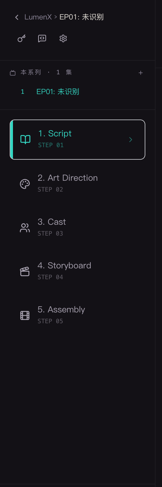
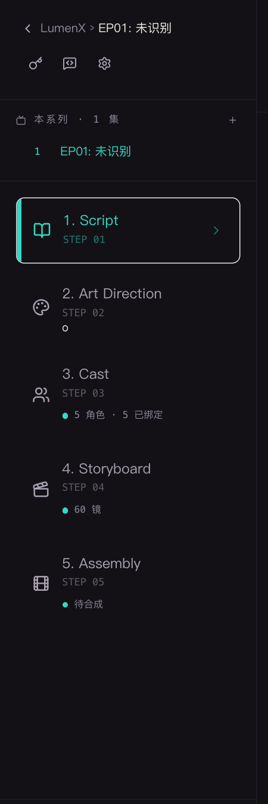
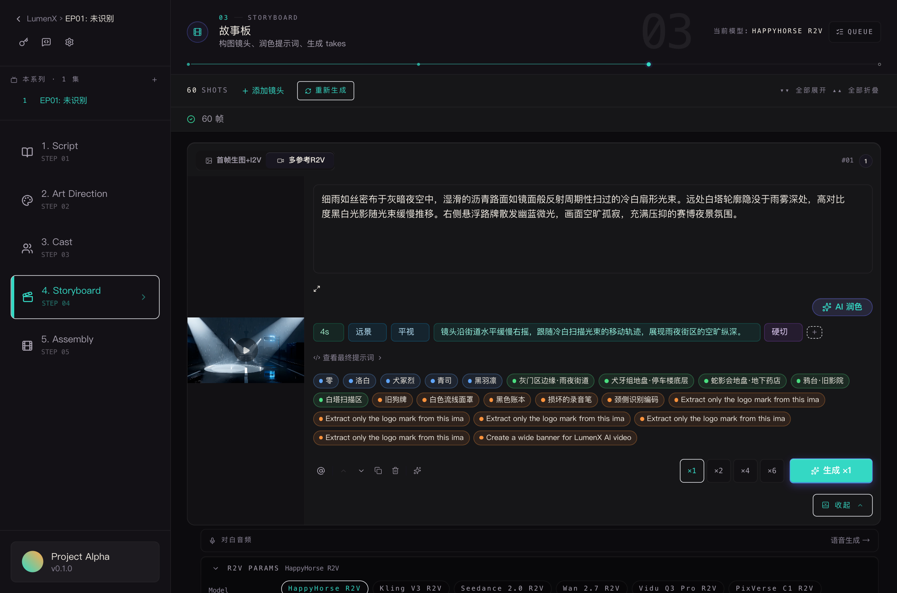
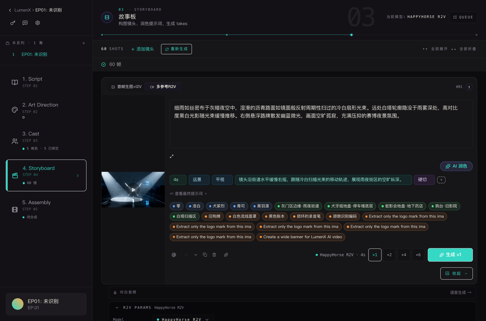

在同一 R2V 项目（fe6d51f3 · 60 帧 · EP01）的同一视图上，分别用 pre-r2v-refactor 与重构后 HEAD 两次实拍。左 Before / 右 After，同一页面同一状态。


railStatus=false（只序号）；After railStatus=true。Cast 显 ● 5 角色 · 5 已绑定；Storyboard ● 60 镜；Assembly 待合成；底部项目卡真实标题 + EP.01（取代「Project Alpha」桩）。两图来自 :3009（老代码独立 dev server）与 :3008（新代码），非 HMR。

dropdownCount=0、genSum=none；After dropdownCount=60（60 个镜头各一个下拉）、genSum="HappyHorse R2V · 4s"。Δ 模型选择器：pill-wall（flex-wrap）→ tonal 下拉框。Δ 生成条：常驻 ● HappyHorse R2V · 4s 摘要。两图来自不同 dev server（:3009 老代码 / :3008 新代码），非 HMR，无时序竞争。aria-expanded 触发器、侧栏「5 角色 · 5 已绑定 / 60 镜 / 待合成」均在渲染）。若仍见老样式，请硬刷新（Cmd+Shift+R）清浏览器缓存，或确认打开的是 R2V 项目（workflow_mode=r2v）的分镜步骤 —— legacy 项目走 StoryboardComposer（未纳入本次重构）。Before 截图通过 git checkout pre-r2v-refactor -- frontend/ 临时回退源码、借 dev server HMR 实拍后即时恢复 HEAD，工作树已确认干净。